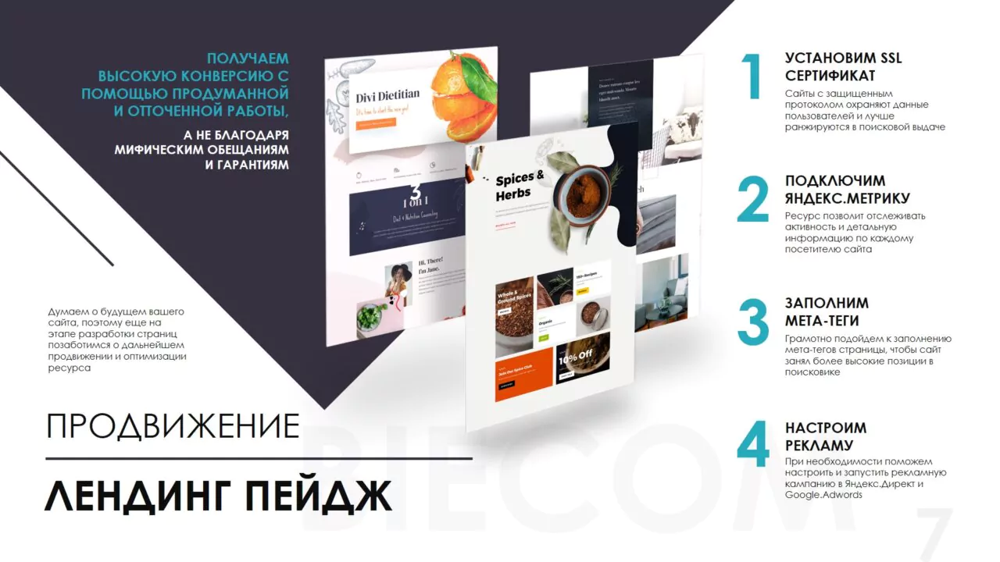
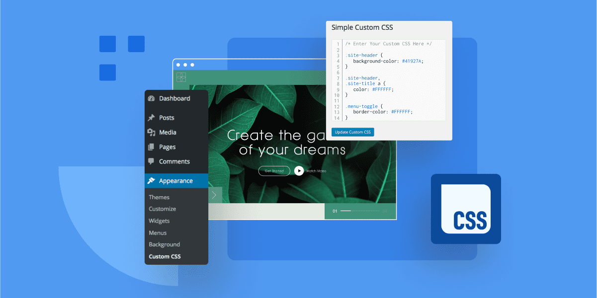

Жобаларым



Заманауи сайттар мен веб-қосымшалар жасаймын • Фрилансер
Жобаларымды қарауМен, Ермахан, веб-әзірлеу саласында ерекше қабілеті бар жас маманмын. Менің шығармашылық ойлау қабілетім, жаңашыл идеяларға деген құштарлығым және техникалық дағдыларым мені өзгелерден ерекшелеп тұрады. HTML, CSS, JavaScript, React, Tailwind сияқты заманауи технологияларды меңгергенмін, және әр жобаны тек функционалды ғана емес, сонымен бірге эстетикалық жағынан да жоғары деңгейде жасауға тырысамын. Менің әрбір жұмысымда жауапкершілік, шапшаңдық және сапа басты рөл атқарады. Клиенттердің талаптарын түсіну, олардың идеяларын нақты жүзеге асыру және үздік тәжірибе ұсыну менің негізгі мақсаттарымның бірі. Мен тек веб-сайт жасаушы ғана емес, сонымен қатар қолданушы тәжірибесін (UX) жетілдіруші, интерфейстерді тартымды және интуитивті етіп жобалайтын кәсіби маманмын. Ермахан ретінде мен әр жобада шығармашылық пен техниканы үйлестіре отырып, ең үздік нәтижеге жетемін. Менің ынтам мен еңбекқорлығым, жаңашыл ойлауым және технологияларға деген шынайы қызығушылығым мені әрдайым жаңа биіктерге жетелейді. Мен өзімнің қабілеттерімді үнемі жетілдіріп, веб-әзірлеу әлемінде жаңа стандарттар орнатуға ұмтыламын.
Landing page, корпоративтік сайт, онлайн дүкен
Figma-да прототиптер, интерфейс дизайны
Барлық құрылғыларға бейімделген дизайн
Жылдам жүктелу, іздеу жүйелеріне дайындық
Instagram: yesimbekov.0
Телефон: +7 (708)614 01 81